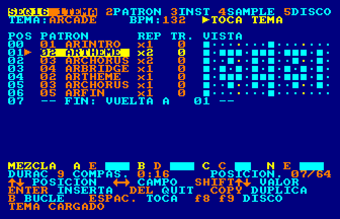
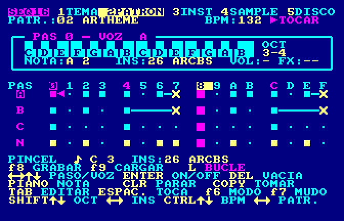
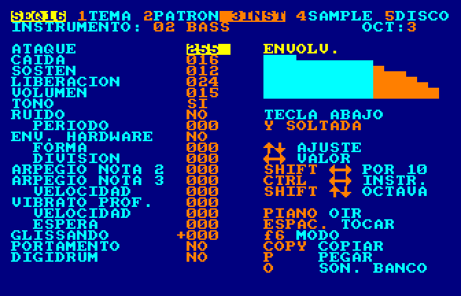
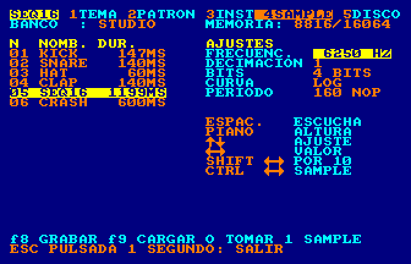
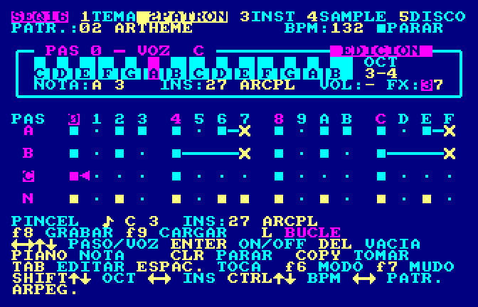

MANUAL DE USO
Manual de SEQ-16
Cada panel y cada tecla de SEQ-16, con los textos tal cual los muestra el disco en español (seq16-es.dsk).
Los textos en amarillo, como BUCLE, son los de la pantalla del CPC. Las teclas se dibujan como teclas de teclado: CTRL + ←/→ quiere decir: mantén CTRL y pulsa la flecha izquierda o derecha.
Empezar y salir
- Mete
seq16-es.dsken la disquetera (o en un emulador configurado como CPC 6128). - Escribe
RUN"SEQ16y RETURN. Aparece la pantalla de carga y el programa arranca en el panel PATRON con SYNTH, el tema synthwave de fábrica (también en el disco como SYNTH.SNG). - Elige un panel con las teclas de función del teclado numérico: 1TEMA 2PATRON 3INST 4SAMPLE 5DISCO. En cada panel, f8 graba y f9 carga.
Para salir, mantén ESC pulsada un segundo. Una pulsación sola no basta, para no perder el trabajo por error.
Los sonidos por defecto están dentro del programa: al arrancar y después de un tema nuevo, siempre se tienen los mismos 32 instrumentos. Los instrumentos 25 a 28 (USER1 a USER4) están libres; 29 a 32 son los digidrums de fábrica (DGKICK, DGSNAR, DGHAT, DGCLAP).
Para descubrir el programa, el disco de demostración trae dos temas completos: ARCADE (sin samples, sonido de 4 voces, los 7 efectos) y STUDIO (batería de samples y voz). Panel f1, f9, elige el tema y luego ESPACIO.
f1 · TEMA, el tema
Un tema encadena hasta 64 posiciones. Cada línea da la posición, el patrón y su nombre, las repeticiones (REP, 1 a 16), la transposición (TR., −12 a +12 semitonos, salvo el ruido) y una vista de los pasos. La marca ► sigue la posición que suena, ↑ marca el inicio del bucle; la línea -- FIN: VUELTA A cierra la lista.
Abajo, MEZCLA ajusta el volumen de cada voz (se graba con el tema) y DURAC da la duración del tema. En el panel PATRON, el tema no avanza: el patrón que se ve se repite; al volver a TEMA, el tema sigue.

| Teclas | En pantalla | Acción |
|---|---|---|
| ↑/↓ | POSICION | elegir una posición (bajo la línea FIN: la mezcla) |
| ←/→ | CAMPO | elegir un campo: patrón, repeticiones, transposición (en la mezcla: la voz) |
| SHIFT + ↑/↓ | VALOR | cambiar el valor (en la mezcla: el volumen de la voz) |
| ENTER | INSERTA | insertar una posición |
| DEL | QUIT | quitar la posición |
| COPY | DUPLICA | duplicar la posición |
| B | BUCLE | el bucle empieza aquí; en la posición del bucle, B lo quita: la reproducción se para entonces al final del tema |
| ESPACIO | TOCA | tocar el tema desde el cursor / parar |
| f8 / f9 | DISCO | grabar / cargar un tema .SNG |
El nombre de un patrón es el de su fichero .PAT: aparece en TEMA y en la línea de estado del panel PATRON.
f2 · PATRON, el secuenciador
Arriba, la línea de estado: el número y el nombre del patrón (PATR.:), el tempo y el estado. Debajo, el panel del paso: el paso y la voz del cursor, un teclado de 2 octavas, y la nota, el instrumento, el volumen y el efecto de la casilla (FX:).
La rejilla: las voces A, B, C y N (ruido) en 16 pasos. Una nota mantenida se prolonga con una raya hasta su parada; una voz silenciada se ve en naranja. En modo sonido de 4 voces, una sola línea toca un sonido en las 4 voces, y sus capas se ven bajo la rejilla.

| Teclas | En pantalla | Acción |
|---|---|---|
| ←/→ ↑/↓ | PASO/VOZ | mover el cursor; se oye la nota a la que se llega |
| Teclas del piano | NOTA | poner una nota con el instrumento del pincel, oírla, pasar al paso siguiente |
| ENTER | ON/OFF | encender la casilla con el pincel, o apagarla |
| DEL | VACIA | vaciar la casilla |
| CLR | PARAR | parada de nota |
| COPY | TOMAR | la casilla pasa a ser el pincel (nota e instrumento) |
| TAB | EDITAR | editar el panel del paso: ←/→ elige NOTA, INS, VOL y luego las dos cifras del FX, ↑/↓ cambia el valor |
| CAPS LOCK | BLOQ. | bloquear el instrumento del pincel |
| ESPACIO | TOCA | tocar / parar |
| L | BUCLE / 1 VEZ | el patrón se repite, o se toca una sola vez |
| f6 | MODO | voces sueltas / sonido de 4 voces |
| f7 | MUDO | silenciar (o volver a oír) la voz del cursor |
| SHIFT + ↑/↓ | OCT | octava de entrada |
| SHIFT + ←/→ | INS | instrumento del pincel (y de la nota bajo el cursor) |
| CTRL + ↑/↓ | BPM | tempo en BPM |
| CTRL + ←/→ | PATR. | patrón anterior / siguiente (32 patrones); la música sigue |
| f8 / f9 | GRABAR CARGAR | grabar / cargar el patrón que se ve (.PAT) |


f3 · INST, instrumentos y sonidos de 4 voces
El número y el nombre del instrumento (INSTRUMENTO:), la octava de prueba, los ajustes a la izquierda y el dibujo de la ENVOLV. a la derecha, que se actualiza con cada cambio de ataque, caída, sostenido o relajación. Cambiar de instrumento solo reescribe los valores que cambian.

| Teclas | En pantalla | Acción |
|---|---|---|
| ↑/↓ | AJUSTE | elegir un ajuste |
| ←/→ | VALOR | cambiar su valor |
| SHIFT + ←/→ | POR 10 | cambiar el valor de 10 en 10 |
| CTRL + ←/→ | INSTR. | instrumento anterior / siguiente (32 instrumentos) |
| SHIFT + ↑/↓ | OCTAVA | octava de prueba |
| Teclas del piano | OIR | probar el instrumento |
| ESPACIO | TOCAR | oír el patrón con el sonido cambiado |
| f6 | MODO | pasar a los sonidos de 4 voces |
| COPY | COPIAR | copiar el instrumento (ajustes y nombre) |
| P | PEGAR | pegar: el instrumento copiado sustituye al que se ve |
| O | SON. BANCO | tomar un sonido de un banco .INS: el banco y luego uno de sus 32 sonidos |
| f8 / f9 | grabar / cargar un banco de instrumentos .INS |
Los ajustes
| Ajuste | Valores |
|---|---|
| ATAQUE | 0 – 255 |
| CAIDA | 0 – 255 |
| SOSTEN | 0 – 15 |
| LIBERACION | 0 – 255 |
| VOLUMEN | 0 – 15 |
| TONO | SI / NO |
| RUIDO | SI / NO |
| PERIODO | 0 – 31 |
| ENV. HARDWARE | SI / NO |
| FORMA | 8 – 15 |
| DIVISION | 0 – 7 |
| ARPEGIO NOTA 2 | 0 – 24 |
| ARPEGIO NOTA 3 | 0 – 24 |
| VELOCIDAD | 1 – 15 |
| VIBRATO PROF. | 0 – 6 |
| GLISSANDO | valor con signo (+008) |
| PORTAMENTO | SI / NO |
| DIGIDRUM | SI / NO |
El ajuste DIGIDRUM (el último): en SI, el instrumento toca un sample en vez de una nota; la línea PERIODO pasa a ser SAMPLE seguida del nombre del sample. Ver Digidrums.
Los sonidos de 4 voces (f6)
Un sonido de 4 voces toca hasta 4 instrumentos a la vez, uno por voz, a partir de una sola nota. CAPAS DEL SON S muestra sus 4 voces: el instrumento (--: voz sin usar, o 01 a 32), el desplazamiento (−24 a +24 semitonos; para la voz N, el periodo del ruido BR00 a BR1F) y el volumen (-: el del instrumento, o 0 a 15).
La misma tabla se ve bajo la rejilla del panel PATRON en modo sonido de 4 voces.

| Teclas | En pantalla | Acción |
|---|---|---|
| ↑/↓ | AJUSTE | elegir un campo: para cada voz, el instrumento, el desplazamiento, el volumen |
| ←/→ | VALOR | cambiar su valor (con SHIFT: de 10 en 10) |
| CTRL + ←/→ | SON | sonido anterior / siguiente (S1 a S8) |
| Teclas del piano | OIR | probar el sonido |
f4 · SAMPLE

El banco de samples a la izquierda (BANCO :, MEMORIA:), los AJUSTES del sample elegido a la derecha. La primera vez que se abre SAMPLE, el banco DRUMS.SMP se carga solo. Aquí, el banco del tema STUDIO, con la voz SEQ16.
| Teclas | En pantalla | Acción |
|---|---|---|
| ESPACIO | ESCUCHA | escuchar el sample elegido (otra vez: parar) |
| Teclas del piano | ALTURA | el sample más agudo o más grave (±12 semitonos) |
| ↑/↓ | AJUSTE | elegir un ajuste: frecuencia, decimación, bits, curva |
| ←/→ | VALOR | cambiar su valor (con SHIFT: la frecuencia de 10 en 10) |
| CTRL + ←/→ | SAMPLE | sample anterior / siguiente |
| O | f8 GRABAR f9 CARGAR O TOMAR 1 SAMPLE | tomar un sample de otro banco (16 samples y 16 KB como máximo) |
| f8 / f9 | grabar el banco (con ajustes y samples añadidos) / cargar otro banco .SMP |
| CURVA | Efecto |
|---|---|
| LOG | el resultado fiel |
| LINEAL | más hueco y distorsionado |
| SATURADA | la señal ×2,5, recortada |
| PLEGADA | la señal ×2,5, plegada |
| INVERSA | la onda al revés |
Mientras suena un sample, la pantalla no responde: el procesador solo toca el sample, con las interrupciones cortadas.
f5 · DISCO, el catálogo
El catálogo del disco, por tipo de fichero: temas, patrones, instrumentos, samples. Arriba, el espacio libre y el número de ficheros; bajo la lista, el fichero elegido y el panel en el que ENTER lo carga.
Grabar con f8 (en cualquier panel): escribe el nombre (8 letras o cifras como máximo) en la línea de mensajes y RETURN; ESC cancela. Si el fichero ya existe, un segundo RETURN lo sustituye.

| Teclas | En pantalla | Acción |
|---|---|---|
| ←/→ ↑/↓ | ELEGIR | elegir un fichero |
| TAB | TIPO | tipo siguiente: SNG, PAT, INS, SMP |
| ENTER | CARGAR | cargar el fichero en su panel, que se muestra |
| DEL | BORRAR | borrar el fichero (dos veces) |
| COPY | RENOMBRA | renombrar el fichero |
| N | NUEVO | tema nuevo (dos veces) |
| C | RELEER | releer el disco (después de cambiarlo) |
| ESPACIO | escuchar el patrón | |
| f8 | GRABAR EL TEMA (.SNG) | grabar el tema |
Los efectos por paso (FX)
Cada casilla de un patrón puede llevar un efecto, escrito en hexadecimal: la primera cifra elige el efecto, la segunda su fuerza x (0 a F); --: ningún efecto.
| FX | Efecto | Lo que pasa | Ejemplo |
|---|---|---|---|
1x | SUBE | la nota sube | 14 |
2x | BAJA | la nota baja | 2C |
3x | ARPEG. | la nota y la nota + x semitonos | 37 |
4x | REPITE | la nota se repite cada x imágenes (1/50 s) | 43 |
5x | CORTA | la nota se suelta tras x imágenes | 52 |
6x | DEMORA | la nota empieza x imágenes después del paso | 62 |
7x | VIBRATO | vibrato de profundidad x | 73 |
- En el panel PATRON, pon el cursor en la casilla y luego TAB.
- Ve al FX con → (la cifra del efecto y luego la de la fuerza) y cámbialo con ↑/↓: el nombre del efecto aparece en la línea de mensajes.

Con sonido de 4 voces, el efecto vale para todas las voces del sonido; REPITE, CORTA y DEMORA también funcionan en la voz de ruido. CORTA en un digidrum acorta el sample (52 en un KICK: 40 ms en vez de 148), y la música pierde menos pasos. El tema ARCADE del disco de demostración usa los 7 efectos.
Ficheros y mensajes
| Fichero | Contenido | Panel |
|---|---|---|
.SNG | todo el tema: 32 patrones y sus nombres, 32 instrumentos, 8 sonidos, mezcla, encadenamiento, y el banco de samples que usa | TEMA, DISCO |
.PAT | un patrón solo: modo, tempo, 16 pasos | PATRON |
.INS | 32 instrumentos, sus nombres y los 8 sonidos | INST |
.SMP | un banco de samples (16 como máximo, 16 KB como máximo) y sus ajustes | SAMPLE |
Un .SNG lleva consigo su banco de samples: se puede copiar a otro disco sin olvidar nada. Los temas de formatos antiguos se siguen cargando; si existe un fichero con el mismo nombre, AMSDOS guarda el antiguo como .BAK.
Los mensajes
| Mensaje | Significado |
|---|---|
| TEMA Y BANCO DE SAMPLES CARGADOS | el tema y su banco de samples están cargados |
| ERROR DE DISCO (DISCO? NOMBRE?) | no hay disco, o no hay fichero con ese nombre; seguido del código de error de AMSDOS y del número de bytes leídos |
| ESTE FICHERO NO ES UN TEMA SEQ-16 | el fichero no es un .SNG de SEQ-16 |
| N OTRA VEZ: BORRAR TODO? | pulsa N otra vez para empezar un tema nuevo |
| DEL OTRA VEZ: BORRAR EL FICHERO | pulsa DEL otra vez para borrar el fichero |
| FLECHAS Y RETURN (ESC: CANCELAR) | hay una lista de ficheros abierta |
| NINGUN FICHERO DE ESTE TIPO EN EL DISCO | ningún fichero del tipo buscado en el disco |
| BANCO DEMASIADO GRANDE | el banco .SMP no cabe en la memoria |
| BANCO LLENO (16 SAMPLES) | tecla O en SAMPLE: el banco está lleno |
| MEMORIA INSUFICIENTE PARA SAMPLES | los samples y los digidrums están desactivados; lo demás funciona |
Los bancos de sonidos
El disco trae 13 bancos de instrumentos .INS (416 sonidos: batería, bajos, melodías, colchones, arpegios, efectos, buzzer, teclados, chiptune, percusión, deslizados, ruidos, y USINE, los instrumentos por defecto) y 8 bancos de samples .SMP (DRUMS, VOIX, BATTERI2, PERCUS, EFFETS, BASSES, NOTES, MOTS; el 9.º, CHIFFRES, está en seq16-samples.dsk).
- Instrumentos: panel INST, f9 carga un banco entero, O toma un solo sonido, f8 graba tus instrumentos.
- Samples: panel SAMPLE, f9 carga un banco, O toma un solo sample, f8 graba el banco.
Todos los sonidos están sintetizados o dichos por espeak: ningún sample sacado de Internet. El detalle de cada banco está en el README.
Los samples, paso a paso
El CPC no tiene convertidor digital-analógico: toca un sample cambiando muy rápido el volumen de un canal del AY, en 16 niveles. De ahí sale el grano, y la degradación es lo que se busca.
- Abrir el sampler: f4. La primera vez,
DRUMS.SMPse carga solo. - Escuchar: CTRL + ←/→ elige un sample, ESPACIO lo toca; las teclas del piano lo tocan más agudo o más grave.
- Ensuciar el sonido: ↑/↓ elige un ajuste, ←/→ cambia su valor; vuelve a escuchar después de cada cambio.
- Cambiar de banco: f9, flechas, RETURN.
- Añadir un sample de otro banco: O, el banco y luego el sample.
- Grabar el banco, con sus ajustes: f8.
- Fabricar tus propios sonidos en el PC a partir de WAV, con la pestaña SAMPLES SEQ-16 de CPC DISK o
tools/wav2smp.py.
Un banco ocupa 16 KB como máximo (unos 4 segundos a 8 kHz) y contiene 16 sonidos como máximo.
Los digidrums: samples en el tema
Un digidrum es un instrumento que toca un sample del banco cargado en vez de una nota. Los instrumentos de fábrica 29 a 32 tocan los 4 sonidos de DRUMS.SMP.
- Panel INST: pon DIGIDRUM en SI.
- La línea PERIODO pasa a ser SAMPLE: elige el número del sample (0 = el primero).
- El VOLUMEN ajusta su fuerza. Ponlo como una nota: el DO de la octava 4 lo toca a su altura original, ±12 semitonos.
La voz elige el canal del AY (en la voz N: el canal C); una voz silenciada no toca sus digidrums.
Un sample ocupa todo el procesador. Mientras suena, la pantalla no responde, el secuenciador se para y las otras voces se congelan; después, se recupera el tempo. Con sonidos cortos (menos de 150 ms) casi no se nota; un sample largo corta los demás sonidos mientras suena. Cambiar de sample (o de altura, o de volumen) también obliga a preparar sus tablas, hasta unos 300 ms.
Límites conocidos
- Hace falta un CPC 6128: los patrones se guardan en la memoria adicional.
- Los bancos de samples caben en 16.064 bytes (unos 4 segundos a 8 kHz), 16 samples como máximo.
- La lista de ficheros solo funciona en la unidad A.
- El firmware escribe despacio (unos 3,5 ms por carácter): una pantalla completa tarda más de un segundo en dibujarse, pero la música sigue a tiempo mientras tanto.
- Un pequeño «toc» al principio o al final de un sample es posible.
Todavía no
- renombrar los instrumentos;
- copiar / pegar bloques de pasos;
- samples: tablas guardadas en la memoria adicional, modo TROCEADO, retoques del panel SAMPLE.
Las notas técnicas completas están en el README del repositorio.